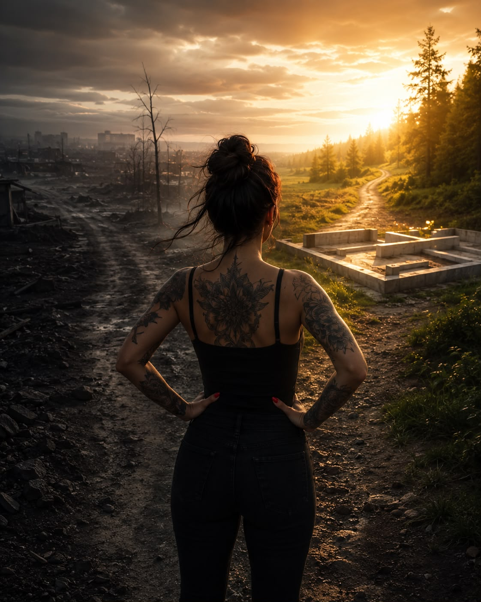

I dag er det nøyaktig 9 måneder siden jeg sto opp til min første edru dag.
Igjen.
Før det hadde jeg en sprekk som varte i 8 måneder.
En lang, mørk omvei etter at jeg egentlig hadde vært edru i mange år.
Jeg trodde kanskje jeg var trygg.
Det var jeg ikke.
Men i dag har det gått 9 måneder.
Det fikk meg til å tenke.
For 9 måneder er også omtrent tiden det tar å skape et menneske.
Et nytt liv.
Skapt i det stille.
Dag for dag.
Celle for celle.
Ingen forventer at et barn skal være ferdig utviklet etter én måned.
Ingen blir utålmodige fordi magen ikke synes etter seks uker.
Vi vet at de største forandringene skjer i det skjulte.
Slik tror jeg det er med edring også.
For 9 måneder siden var hjernen min i ubalanse.
Nervesystemet mitt var utslitt.
Jeg var redd.
Skamfull.
Skjelven.
På utsiden så jeg kanskje ganske lik ut.
Men på innsiden foregikk det et arbeid ingen kunne se.
Hjernen måtte finne tilbake til seg selv.
Kroppen måtte lære seg å leve uten alkohol.
Jeg måtte lære å tåle følelsene mine uten å flykte fra dem.
Dag for dag.
Akkurat som et barn ikke blir til på én dag, blir heller ikke et nytt liv til på én dag.
Jeg har måttet bygge opp tilliten til meg selv igjen.
Lære meg at sug går over.
At frykt kan stås i.
At skam mister kraft når den blir møtt med ærlighet.
Jeg har øvd meg på å velge det som er godt for meg, selv når det ikke føles godt der og da.
Og kanskje er det akkurat det edring er.
Ikke bare å slutte å drikke.
Men å bygge et liv man ikke lenger trenger å flykte fra.
Men det slo meg også at sammenligningen med et svangerskap stopper ved én ting.
Etter 9 måneder er ikke historien ferdig.
Den begynner.
Da jeg gikk gravid med mitt første barn, for snart tjue år siden, var jeg så opptatt av ukene.
Av milepælene.
Av at magen vokste.
Av termin.
Jeg levde meg gjennom svangerskapet uten egentlig å forstå hva som ventet på den andre siden.
Og kanskje er det sånn det skal være.
Kanskje vokser vi i takt med det livet vi bærer.
Jeg forsto det ikke.
Ikke før hun var rundt 48 timer gammel.
Jeg begynte å gråte.
Ordentlig gråte.
Jeg satt og så på de bittesmå føttene hennes, og plutselig slo det meg med et vanvittig alvor at de føttene en dag skulle bli store.
At de skulle lære å gå.
Løpe.
Snuble.
Reise seg.
Finne sin egen vei.
Og jeg husker at jeg lovet henne noe.
Jeg lovet henne at når de små føttene en dag sto i sko størrelse 39 eller 40, skulle veien dit bli en helt annen enn den jeg selv hadde gått.
For 9 måneder siden var det min tur.
Denne gangen var løftet til meg selv.
At jeg skulle finne tilbake til Edrustien.
At jeg ikke skulle fortsette å være selvdestruktiv.
At jeg ikke skulle leve i aktiv rus.
At selv om jeg hadde falt, kunne jeg fortsatt reise meg.
At også jeg var verdt et nytt liv.
Et svangerskap varer i omtrent ni måneder.
Et foreldreskap varer resten av livet.
Sånn tenker jeg det er med edring også.
At ni måneder betyr ikke at jeg er ferdig.
Det betyr bare at fundamentet er lagt.
Nå skal det livet jeg har bygget, få fortsette å vokse.
Det vil fortsatt komme dager hvor jeg tviler.
Dager hvor livet gjør vondt.
Dager hvor jeg blir sliten.
Men forskjellen er at jeg ikke lenger ønsker å bedøve livet mitt.
Jeg ønsker å leve det.
For 9 måneder siden trodde jeg at målet var å bli edru.
I dag tror jeg målet er noe helt annet.
Målet er å fortsette å vokse.
Å fortsette å velge meg selv.
Å fortsette å ta vare på det livet som sakte har vokst frem disse månedene.
For et barn slutter ikke å trenge kjærlighet fordi det er født.
Og edringen min slutter ikke å trenge omsorg fordi den har vart i 9 måneder.
Den trenger fortsatt min tid.
Min ærlighet.
Min tålmodighet.
Mitt ansvar.
Og min vilje til å velge den.
Én dag av gangen.
Den lille jenta med de bittesmå føttene er voksen nå.
Hun trenger meg ikke på samme måte som da hun var nyfødt.
Men jeg har aldri sluttet å være mamma.
Og jeg håper det blir sånn med edringen min også, at jeg aldri blir ferdig med å ta vare på den.
At jeg fortsetter å bygge et liv som er verdt å ta vare på.
